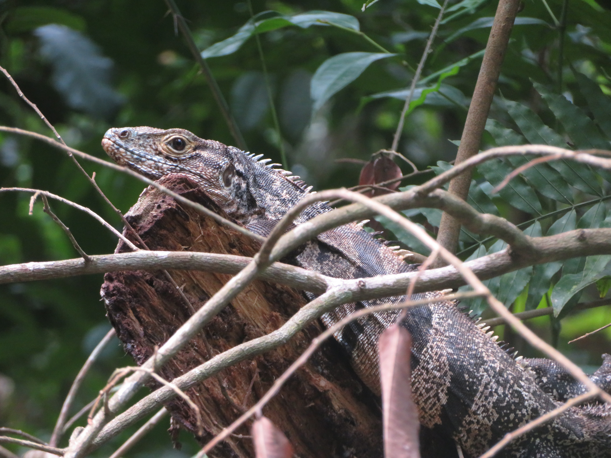
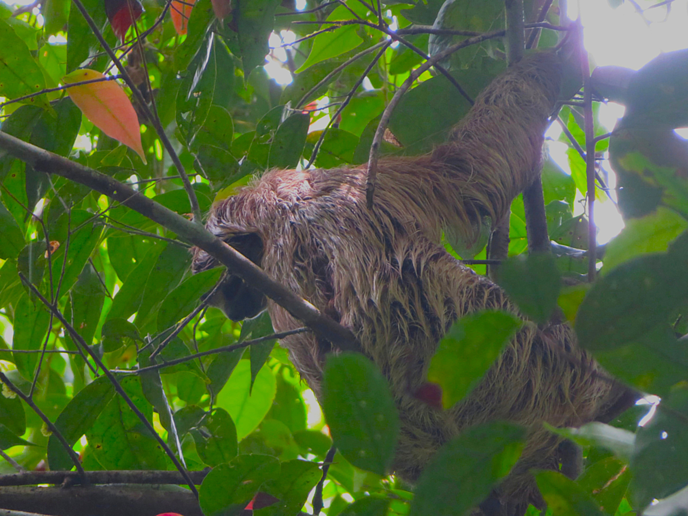
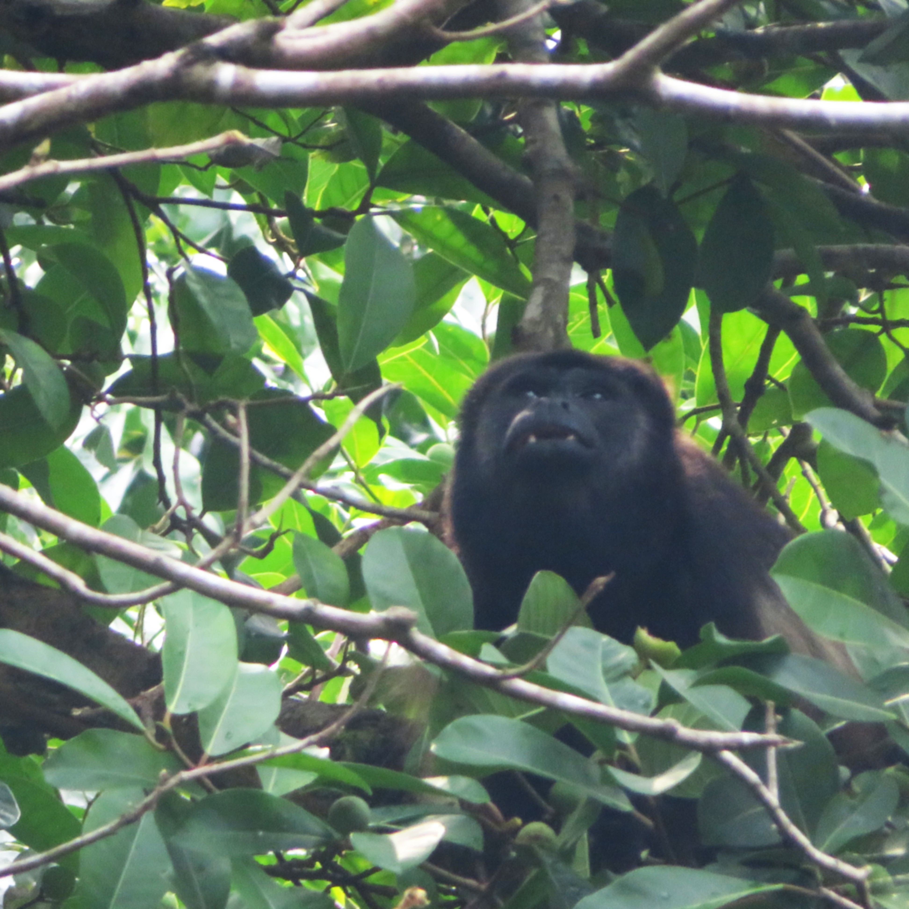
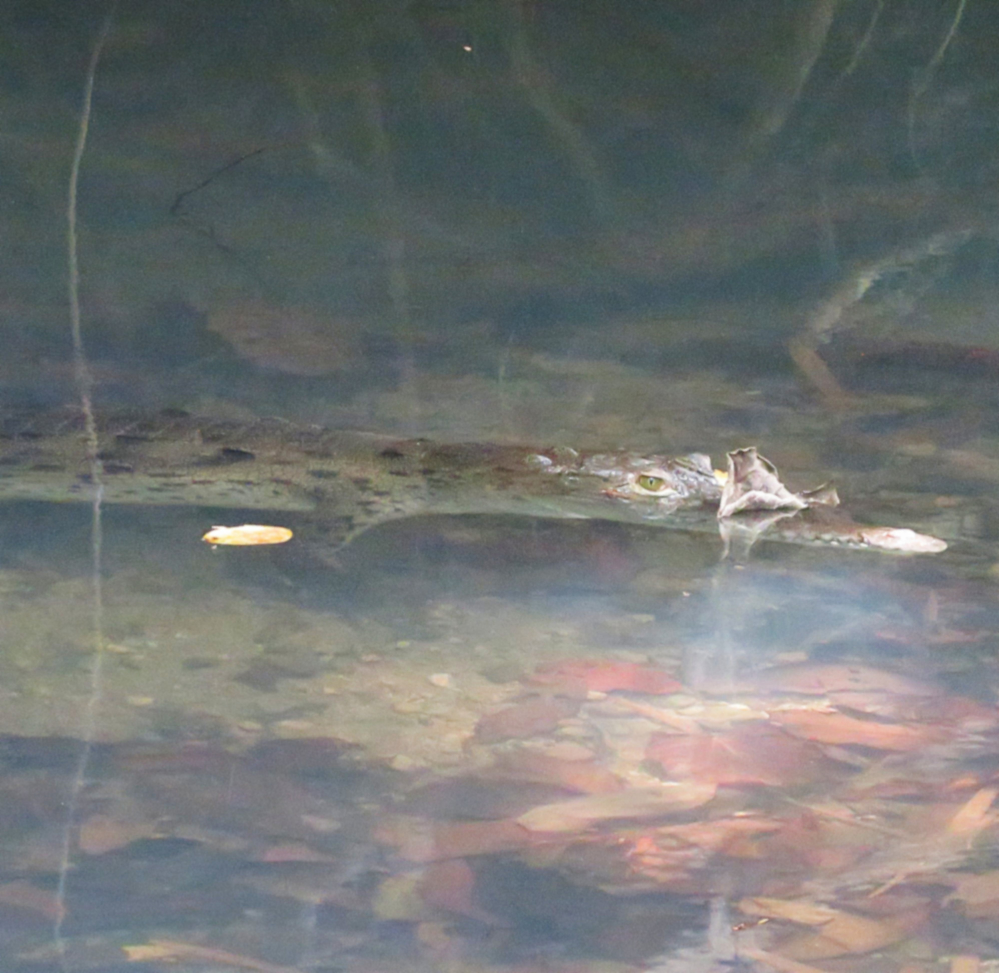

Manuel Antonio Rainforest

Iguana
Manuel Antonio National Park is the most popular national park in Costa Rica and for good reason. While the park is a beach paradise, it is also one of the best places in Costa Rica to see wildlife, housing some of the densest concentrations of wild animals in the country.
Manuel Antonio Rainforest

Iguana
The land mammals have to be the highlight of Manuel Antonio, with 3-Toed Sloths being my favorite. One particular sloth I got to see was lounging in the trees right above the trail to the Manuel Antonio Beach, which was extremely adorable to see up close. I also found a White-tailed Deer and a variety of monkeys in the rainforests here, including squirrel monkeys, my favorite and the cutest ones in Costa Rica, as well as Howler monkeys hanging out up in the canopy.

3-Toed Sloth

3-Toed Sloth

White-Tailed Deer

Squirrel Monkey

Squirrel Monkey

Howler Monkey
Besides mammals, so much other wildlife can be found in this park. Birds like Parakeets and the extremely rare Potoo inhabit the park's rainforests, just like Gladiator frogs and tons of iguanas on the forest floor. Finally, I even got to see a crocodile lounging in a small pond at the park entrance, which is actually the first time I saw one in the wild.

Parakeet

Potoo

Gladiator Frog

Iguana

Iguana

Crocodile